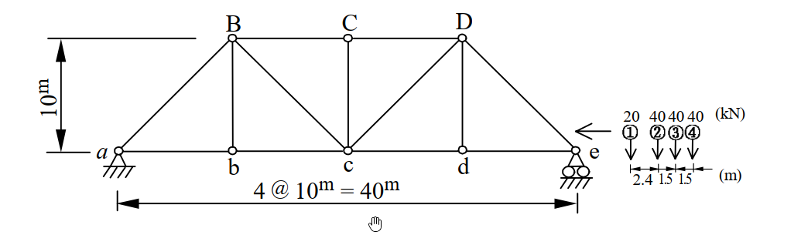

考題編號：SA-2004-2
主分類： SA-U1-3 靜定結構分析
副分類： 無
分析法： 影響線
標籤： 桁架 影響線 移動載重 最大內力
1. 原始題目重述 (Problem Restatement)
題目要求：
求圖示桁架在卡車序列載重作用下，最大可能之 $a$ 點反力及 $bc$ 桿件內力。（25 分）
結構與載重條件描述：
- 結構型式：靜定平面桁架，共 4 個節間（Panel），每個節間長度為 $10\text{m}$，總跨距 $L = 40\text{m}$。桁架高度為 $10\text{m}$。
- 支撐條件：左端 $a$ 點為鉸支承（Pin），右端 $e$ 點為滾支承（Roller）。
- 載重條件：卡車序列載重由右向左行駛，包含四個集中載重。依序（由前至後）為 $20\text{kN}$、 $40\text{kN}$、 $40\text{kN}$、 $40\text{kN}$。
- 載重間距：前輪至第二軸為 $2.4\text{m}$，第二軸至第三軸為 $1.5\text{m}$，第三軸至後軸為 $1.5\text{m}$。

圖說：桁架尺寸為 4@10m = 40m，高 10m。a點為鉸支承，e點為滾支承。卡車序列載重由右側進入，依序為20, 40, 40, 40 kN，間距分別為 2.4m, 1.5m, 1.5m。
2. 考題核心精神與出題者意圖 (Core Concepts & Examiner's Intent)
本題的核心在於測驗考生對於影響線（Influence Lines）的繪製與移動載重（Moving Loads）極值分析的掌握度。
出題者意圖包含：
- 影響線的建立：能否正確利用節點法或截面法，繪製出特定支承反力（$R_a$）與桁架特定桿件（$bc$ 桿）的影響線。特別是桁架的影響線在節點之間呈線性變化。
- 移動載重極值判斷：對於給定的卡車序列載重，能否利用「載重斜率變化法則」或試誤法，找出產生最大反應的臨界位置（Critical Position）。
- 方向性判斷：卡車行駛方向對極值的影響，測驗考生是否能細心觀察圖示箭頭並正確配置載重座標。
3. 解題戰略地圖與陷阱分析 (Strategic Roadmap & Trap Analysis)
解題戰略：
- 建立座標系與載重模型：以 $a$ 點為原點（$x=0$），向右為正。依據箭頭指示，卡車向左行駛，故 $20\text{kN}$ 為前導載重，其 $x$ 座標最小。
- 繪製 $a$ 點反力影響線：利用靜力平衡求得 $R_a$ 隨單位力位置 $x$ 的函數。
- 計算最大反力 $R_{a,\max}$：將最重且最密集的載重盡可能靠近影響線最大值處（即 $x=0$），求得最大反力。
- 繪製 $bc$ 桿內力影響線：在 $b, c$ 之間切截面，取左半部結構，對 $B$ 點取力矩求 $F_{bc}$，繪出其影響線，確認峰值位置。
- 計算最大桿端內力 $F_{bc,\max}$：將卡車序列依序放置，利用斜率判別法找出使總內力達到極值的載重位置，計算該位置下的內力總和。
陷阱分析：
- 陷阱一：卡車載重方向錯置。圖示有明確的向左箭頭，若將 $20\text{kN}$ 放至右側（當作車尾），將導致載重位置與題意不符，進而算出錯誤的極值。
- 陷阱二：桁架影響線的節間特性。桁架載重透過橋面版與縱梁傳遞至節點，因此影響線在節間（如 $a$-$b$ 或 $b$-$c$）必定是直線連接。若使用連續梁的拋物線或錯判節間傳遞，會導致 $F_{bc}$ 影響線繪製錯誤。
- 陷阱三：盲目猜測臨界位置。對於 $F_{bc}$ 的三角形影響線，最大值可能發生在任一重載通過峰值（$x=10$）時。必須透過判定準則或逐一計算來確認，不可僅憑直覺將最重載重放於峰值即停止。
3.5 變數層次分析 (Variable Hierarchy Analysis)
最終目標
求出卡車載重作用下，a 點最大反力及 bc 桿最大拉力。
本題關鍵公式（依計算順序）
-
影響線方程式：
$$ \boxed{IL(x)} = \text{Function of } x $$ -
移動載重反應總和：
$$ R = \sum_{i=1}^{n} P_i \cdot \boxed{IL(x_i)} $$ -
載重移動判定準則（求極值）：
$$ \Delta R = \left( \sum P_{\text{left}} \cdot m_{\text{left}} + \sum P_{\text{right}} \cdot m_{\text{right}} \right) \Delta x $$
L1：題目直接給定
| 符號 | 數值 | 說明 |
|---|---|---|
| $L$ | $40\text{m}$ | 桁架總跨距 |
| $h$ | $10\text{m}$ | 桁架高度 |
| $P_1, P_2, P_3, P_4$ | $20, 40, 40, 40 \text{ kN}$ | 卡車各軸載重 |
| $d_{12}, d_{23}, d_{34}$ | $2.4, 1.5, 1.5 \text{ m}$ | 載重間距 |
L2：需知識點推導
| 符號 | 公式／來源 | 卡關? |
|---|---|---|
| $IL_{Ra}$ | 靜力平衡：$\sum M_e = 0$ | |
| $IL_{Fbc}$ | 截面法：切過 $BC, Bc, bc$，對 $B$ 點取力矩 |
L3：深層知識（不懂就卡住）
| 知識點 | 說明 | 卡關? |
|---|---|---|
| 影響線斜率判定法 | 當載重跨越影響線峰值時，若 $\frac{dR}{dx}$ 變號，則該位置即為極大值。 |
4. 步驟化詳細計算過程 (Step-by-Step Detailed Calculation)
Step 1: 建立座標系與卡車模型
設定 $a$ 點為座標原點 $x=0$，向右為正。
依據圖示箭頭，卡車由右向左行駛，故 $P_1 = 20\text{kN}$ 為最左側之前導載重。
各載重座標相對關係為：
- $x_1 = x$
- $x_2 = x + 2.4$
- $x_3 = x + 3.9$
- $x_4 = x + 5.4$
Step 2: $a$ 點最大反力 $R_{a,\max}$ 分析
1. 繪製 $R_a$ 影響線：
當單位載重 $P=1$ 位於 $x$ 處時，由整體靜力平衡 $\sum M_e = 0$：
$$ R_a \times 40 - 1 \times (40 - x) = 0 \implies IL_{Ra}(x) = 1 - \frac{x}{40} \quad (0 \le x \le 40) $$
影響線為一遞減直線，最大值 $1.0$ 位於 $x=0$。
2. 尋求最大反應位置：
由於 $IL_{Ra}$ 隨 $x$ 遞減，要使反力最大，應將所有載重盡可能放置於最左側（靠近 $a$ 點）。
將前導載重 $P_1$ 置於 $a$ 點，即 $x_1 = 0$：
- $x_1 = 0\text{m} \implies y_1 = 1 - 0/40 = 1.0$
- $x_2 = 2.4\text{m} \implies y_2 = 1 - 2.4/40 = 37.6 / 40 = 0.94$
- $x_3 = 3.9\text{m} \implies y_3 = 1 - 3.9/40 = 36.1 / 40 = 0.9025$
- $x_4 = 5.4\text{m} \implies y_4 = 1 - 5.4/40 = 34.6 / 40 = 0.865$
代入載重求和：
$$ R_a = \sum P_i y_i = 20(1.0) + 40(0.94) + 40(0.9025) + 40(0.865) $$
$$ R_a = 20 + 37.6 + 36.1 + 34.6 = 128.3 \text{ kN} $$
若將卡車繼續向左移使 $P_1$ 離開橋面，由載重判定準則可知，失去 $20\text{kN} \times 1.0$ 的貢獻，但其餘載重每向左移動 $1\text{m}$ 僅增加 $(120\text{kN}) \times (1/40) = 3\text{kN/m}$，得不償失，故此為最大值。
$$ \boxed{R_{a,\max} = 128.3 \text{ kN} \ (\uparrow)} $$
Step 3: $bc$ 桿最大內力 $F_{bc,\max}$ 分析
1. 繪製 $F_{bc}$ 影響線：
取通過第二節間（$b$-$c$ 之間）之垂直截面，切斷 $BC, Bc, bc$ 三桿。
取左半部自由體圖，為求 $F_{bc}$，對 $B$ 點 $(x=10, y=10)$ 取力矩 $\sum M_B = 0$。
-
當單位載重在截面右側 ($10 \le x \le 40$)：
左半部僅有反力 $R_a$。
$$ \sum M_B = R_a \times 10 - F_{bc} \times 10 = 0 \implies F_{bc} = R_a = 1 - \frac{x}{40} $$ -
當單位載重在截面左側 ($0 \le x \le 10$)：
載重透過縱梁分配至 $a, b$ 點，此時 $F_{bc}$ 仍可由左半部整體力矩平衡求得（包含載重於 $a,b$ 點之貢獻，等效為直接以 $P=1$ 的力矩計算）。
$$ \sum M_B = R_a \times 10 - 1 \times (10 - x) - F_{bc} \times 10 = 0 $$
$$ F_{bc} = R_a - \left(1 - \frac{x}{10}\right) = \left(1 - \frac{x}{40}\right) - 1 + \frac{x}{10} = \frac{3x}{40} $$
整理影響線方程式，這是一個在 $x=10$（即 $b$ 點）產生峰值的三角形：
- 峰值：$x = 10\text{m}$ 時， $y = 0.75$
- 左斜率：$m_1 = 3/40$
- 右斜率：$m_2 = -1/40$
2. 尋求最大反應位置（載重判定準則）：
卡車向左行駛，令載重 $P_k$ 通過峰值 $x=10$。反應變化率為：
$$ \frac{dF}{dx} = \sum P_{\text{left}} \cdot m_1 + \sum P_{\text{right}} \cdot m_2 $$
因為卡車向左，位置變數 $dx < 0$，我們需找到 $\frac{dF}{dx}$ 由負轉正的瞬間（即 $dF$ 由正變負，代表越過極大值）。
-
當 $P_1$ 越過 $x=10$ (僅 $P_1$ 在左)：
$\frac{dF}{dx} = 20(3/40) + 120(-1/40) = (60 - 120)/40 = -1.5$
($dx < 0 \implies dF > 0$，內力持續增加) -
當 $P_2$ 越過 $x=10$ ($P_1, P_2$ 在左)：
$\frac{dF}{dx} = 60(3/40) + 80(-1/40) = (180 - 80)/40 = +2.5$
($dx < 0 \implies dF < 0$，內力開始減少)
結論：最大值發生在載重 $P_2 (40\text{kN})$ 剛好位於 $x=10$ 時。
3. 計算 $F_{bc,\max}$：
配置載重：$x_2 = 10\text{m}$。
- $x_1 = 10 - 2.4 = 7.6\text{m}$
- $x_2 = 10\text{m}$
- $x_3 = 10 + 1.5 = 11.5\text{m}$
- $x_4 = 10 + 3.0 = 13.0\text{m}$
查表代入影響線 $y$ 值：
- $y_1 = \frac{3 \times 7.6}{40} = 0.57$
- $y_2 = 0.75$
- $y_3 = 1 - \frac{11.5}{40} = 0.7125$
- $y_4 = 1 - \frac{13.0}{40} = 0.675$
計算總內力：
$$ F_{bc} = 20(0.57) + 40(0.75) + 40(0.7125) + 40(0.675) $$
$$ F_{bc} = 11.4 + 30 + 28.5 + 27 = 96.9 \text{ kN} $$
$$ \boxed{F_{bc,\max} = 96.9 \text{ kN} \text{ (拉力)}} $$
5. 關鍵爭議點與進階探討 (Critical Issues & Advanced Discussion)
- 載重行駛方向的判斷：題目明確畫出了向左的箭頭，因此本解析嚴格遵守載重由右向左移動的情境（$20\text{kN}$ 在最左側）。若實務設計中橋梁允許雙向行駛，則需額外檢核反向行駛的情況。例如若卡車掉頭（$40\text{kN}$ 在最左側），重新放置於影響線上將會得到 $F_{bc} = 97.8\text{kN}$ 的結果，略大於單向行駛。但在國家考試中，遵循圖示箭頭的明確指示是最安全的答題策略，因此最終答案仍以圖示方向為準。